Kaita, Hiroshima: things to do, food and stays
Kaita · Hiroshima
Kaita
Highlighted on the Hiroshima map.
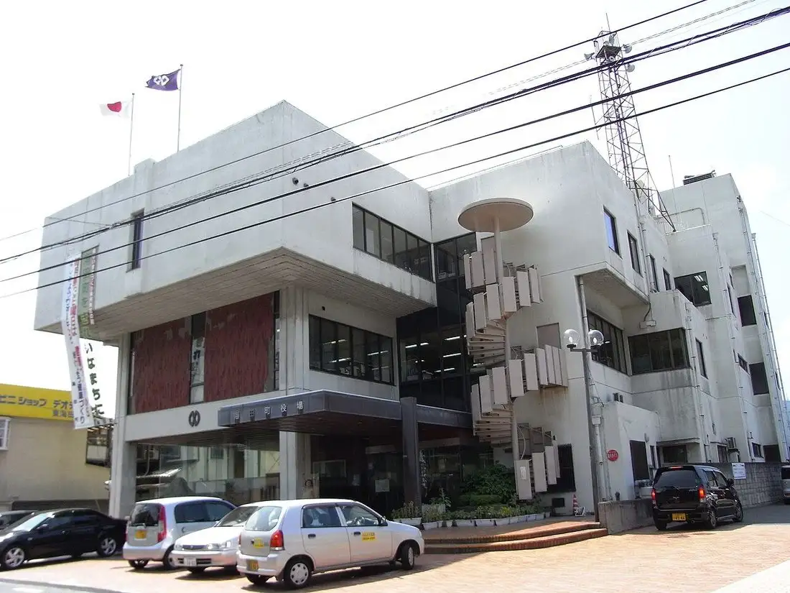
Stay
海田中央ホテル
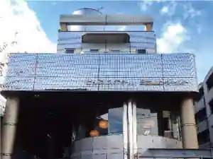
Kaita Chuo Hotel
Hotel in Taisho, Kaita with business travelers.
ホテルアストンプラザ広島2号館（2026年5月1日オープン）
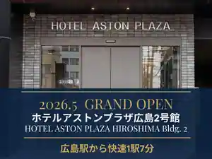
Hotel Asuton Plaza Hiroshima 2 Gokan (2026 Nen 5 Gatsu 1 Nichi Opun)
Hotel in Minamitaisho, Kaita; 7-minute drive from Michirainaworiyosureba1 Station.
Dining
くに勝
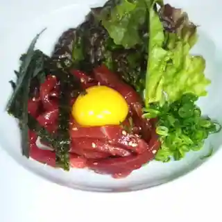
Kuni Kachi
魚食堂たわら
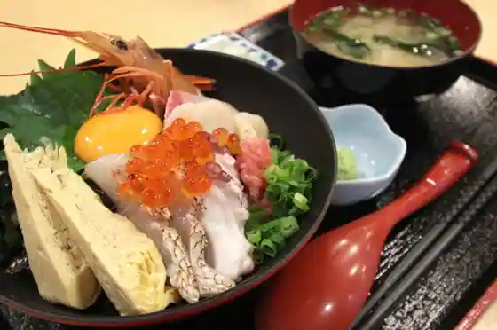
Sakana Shokudo Tawara
お好み焼・鉄板焼 寄り家。 海田店
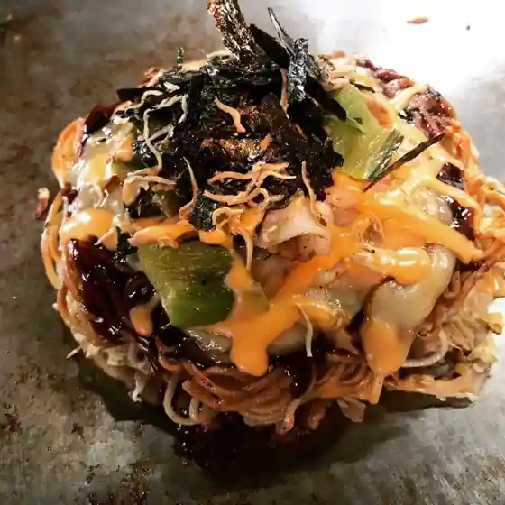
O Konomi Yaki Teppanyaki Yori Ie. Kaita
うどんのもとなり
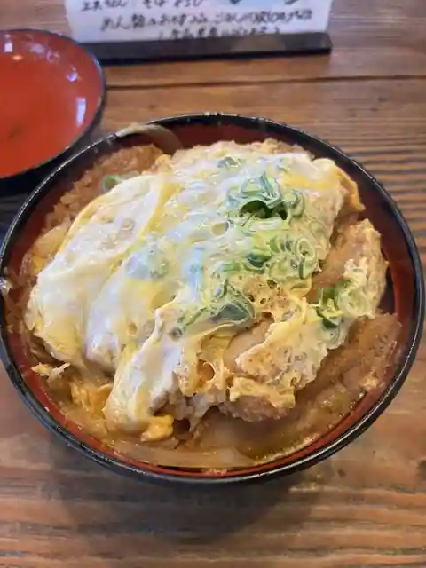
Udonnomotonari
DE LA MER
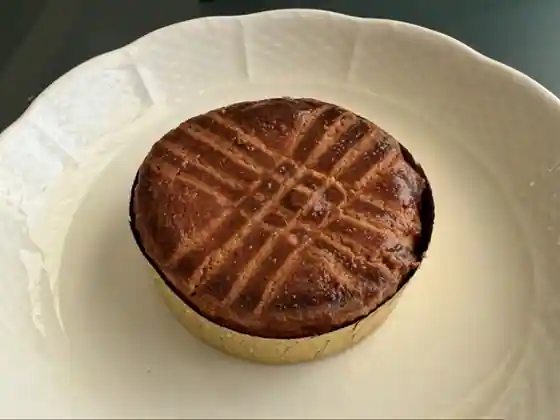
DE LA MER
三八松浦 海田店
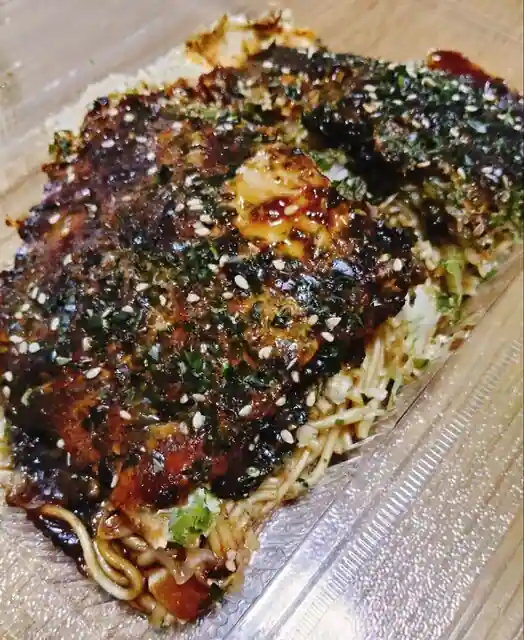
Sanpachi Matsura Kaita
ふたごや
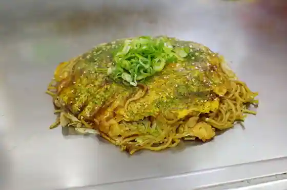
Futagoya
おおのさんちのたこ焼き
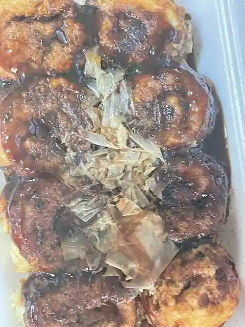
Onosanchinotako Yaki
貝と牛と中華そば うみ虎 海田店
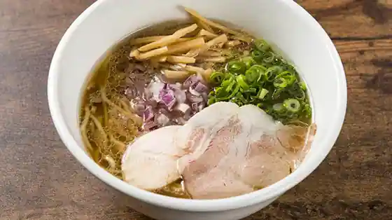
Kai To Ushi To Chuka Soba Umi Tora Kaita
中華そば つばさ
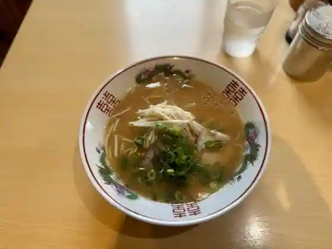
Chuka Soba Tsubasa
おっ好み焼 ようよう
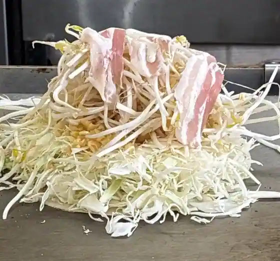
Otsu Konomi Yaki Yoyo
ポピア
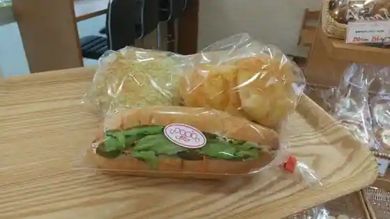
Popia
brique rouge
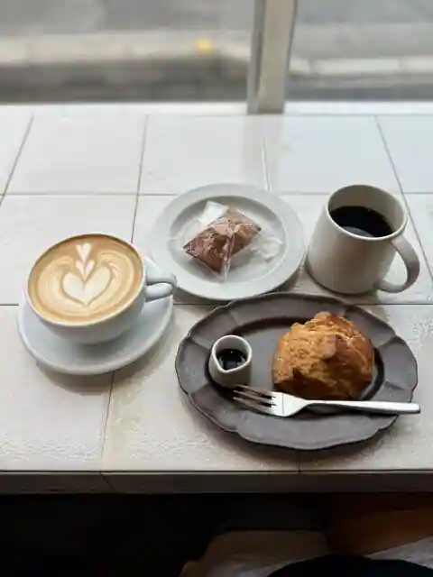
brique rouge
つけ麺本舗 辛部 海田店
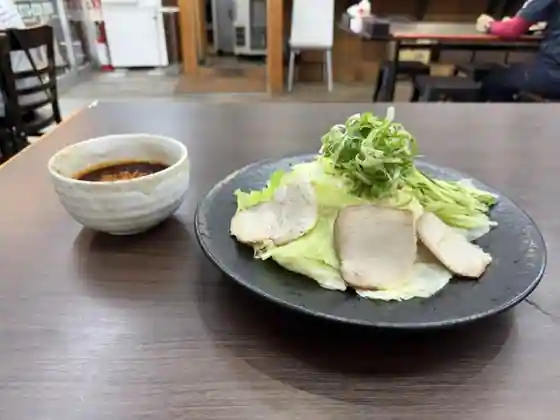
Tsuke Men Honpo Shin Bu Kaita
お好み焼 よっちゃん
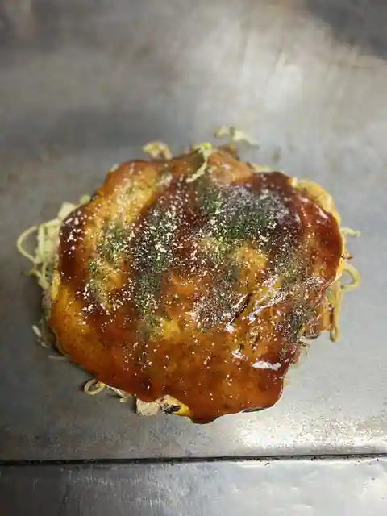
O Konomi Yaki Yotchan
ピッツェリア みト
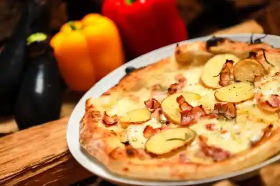
Pizzeria Mi To
うどんの天 海田店
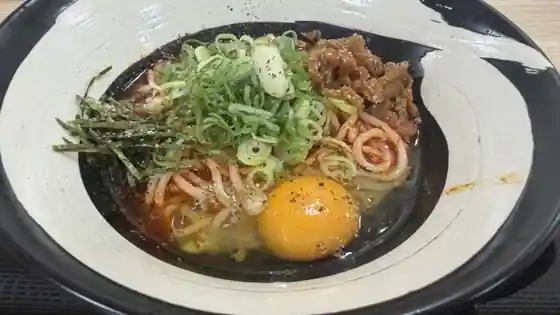
Udonno Kaita
TAJ 海田店
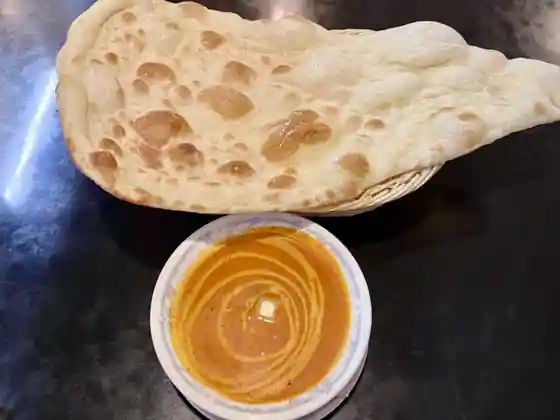
TAJ Kaita
グランマシェリー
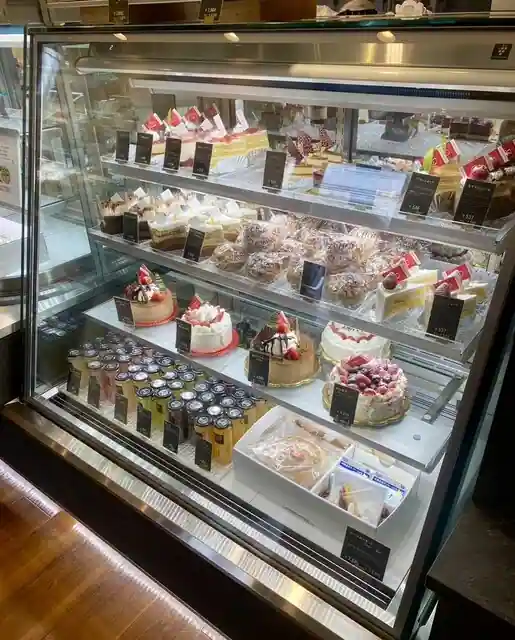
Guranmashieri
Kittan
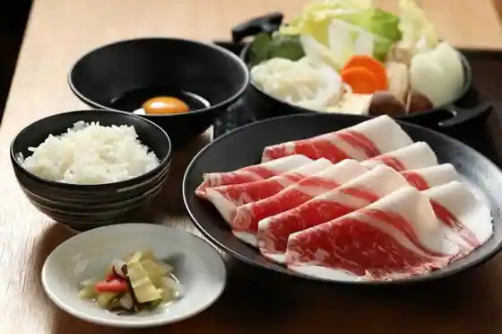
Kittan
中華料理 餃子苑
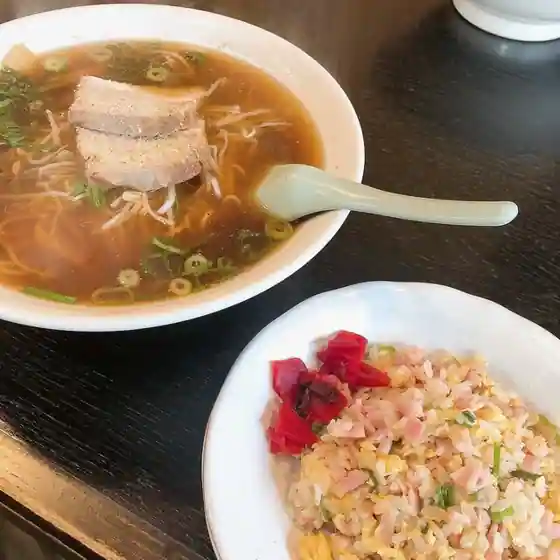
Chukaryori Gyoza En
ハレノヒ
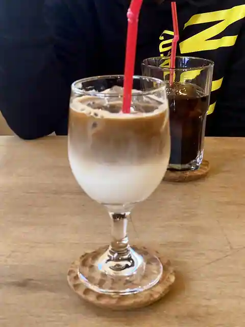
Harenohi
ふくろう
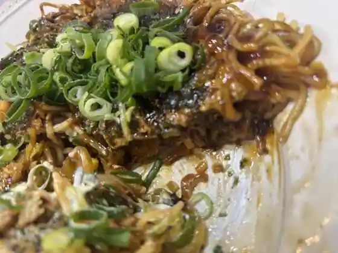
Fukuro
焼肉 しおむら
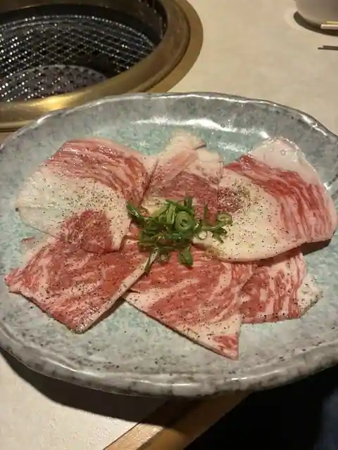
Yakiniku Shiomura
Sights
Kyu Chiba Ie House
Kumano Shrine
Taishi Tera
Oda Mikio Memorial Museum
Kaita Kannon Men no Kusu no Ki
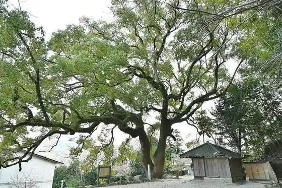